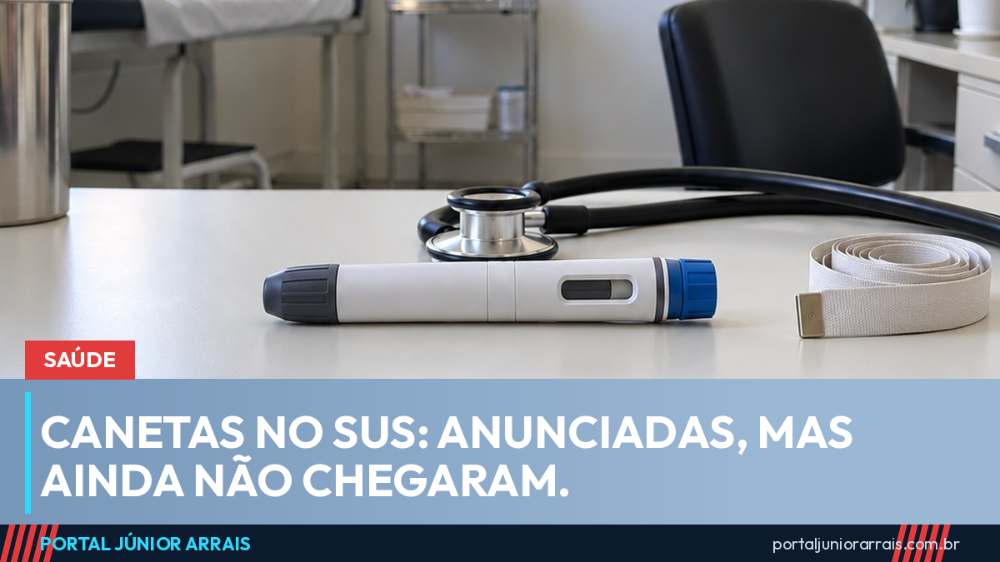

Canetas emagrecedoras no SUS: o que foi anunciado e o que ainda falta

O Ministério da Saúde anunciou que as chamadas canetas emagrecedoras, remédios da classe dos agonistas de GLP-1, como a semaglutida, vão ser oferecidas pelo SUS a pacientes com obesidade. O anúncio saiu na semana passada e repercutiu muito. Mas é preciso separar o que foi decidido do que ainda está no papel: hoje, o remédio não está disponível nas unidades de saúde, e não há data para isso.
O que foi anunciado
Segundo o ministério, a oferta vai seguir um protocolo clínico, o documento que define quem pode receber o tratamento, em que dose e com qual acompanhamento. Esse protocolo ainda não foi publicado.
A pasta citou como base os primeiros resultados de um estudo do Grupo Hospitalar Conceição, da rede pública de Porto Alegre. Desde junho, 250 pacientes com obesidade grave ou associada a outras doenças usam a semaglutida com acompanhamento de especialistas. Parte deles está na fila da cirurgia bariátrica, e a pesquisa quer saber se o remédio consegue controlar o quadro a ponto de a operação deixar de ser necessária. O estudo também avalia efeitos sobre problemas do coração e sobre a volta do câncer de mama.
Quem deve ser atendido
O ministério ainda não detalhou os critérios oficialmente. Informações divulgadas pela imprensa indicam que o foco seria a obesidade grau 3, a mais grave, ou a obesidade acompanhada de outras doenças, como diabetes e problemas cardíacos. É o mesmo grupo que hoje já tem indicação para a cirurgia bariátrica. Ou seja: a proposta não é oferecer o remédio a quem quer perder alguns quilos.
O que ainda falta
- Avaliação da Conitec, a comissão que analisa custo, eficácia e segurança antes de um remédio entrar no SUS. Até agora, não há pedido formal com data;
- Publicação do protocolo clínico, com os critérios de quem recebe;
- Compra e distribuição para estados e municípios.
O presidente Luiz Inácio Lula da Silva também citou a oferta das canetas em agenda pública na semana passada. Até que as etapas acima sejam cumpridas, a promessa não se transforma em remédio na farmácia do posto de saúde. Enquanto isso, a Farmácia Popular segue com a lista atual de medicamentos.
Cuidado com golpe
Canetas emagrecedoras estão entre os produtos mais falsificados do país. Com a notícia do SUS, já aparecem perfis vendendo "caneta do governo", "vaga no programa" ou "cadastro prioritário" mediante pagamento. Remédio comprado fora da farmácia pode ser falso ou mal conservado, e o uso sem acompanhamento médico traz riscos reais à saúde.
Nenhum órgão público cobra taxa ou pede Pix para incluir paciente em tratamento. Se você tem obesidade grave e enfrenta dificuldade para conseguir atendimento, cirurgia ou remédio pela rede pública, procure um profissional de sua confiança para avaliar o seu caso.
Conteúdo informativo — não substitui orientação individualizada sobre o seu caso.
Júnior Arrais · Editor do Portal Júnior Arrais
Comunicador de Ubá (MG). Escreve todos os dias sobre benefícios sociais, INSS, trabalho e economia do dia a dia, a partir do Diário Oficial, de portarias e de fontes oficiais, em linguagem simples. Conheça a linha editorial e a política de correções do portal.